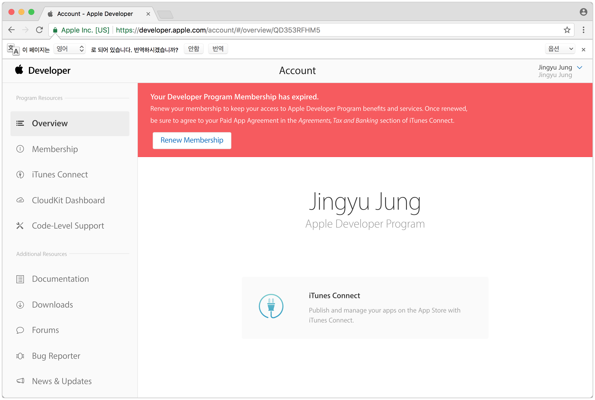
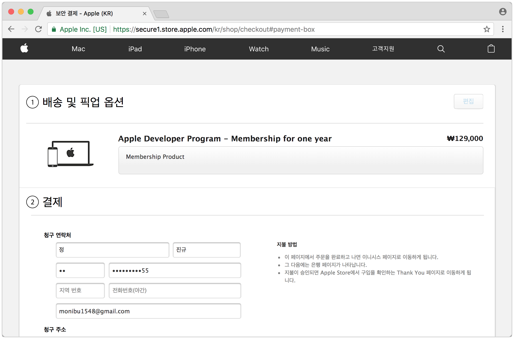
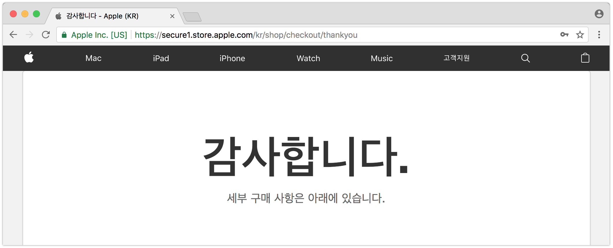
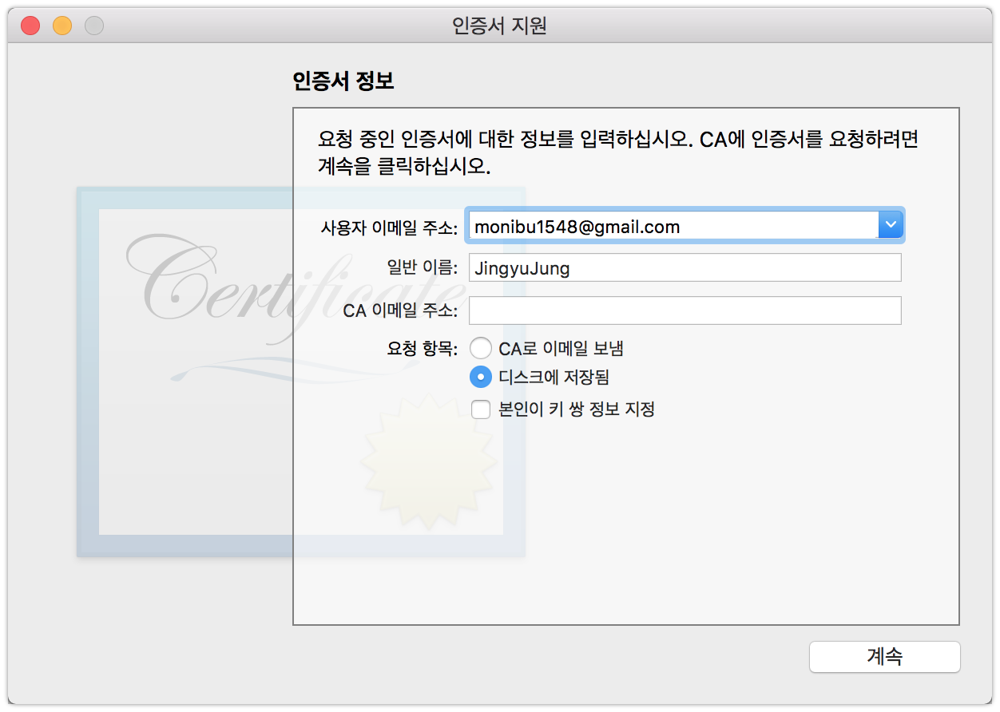
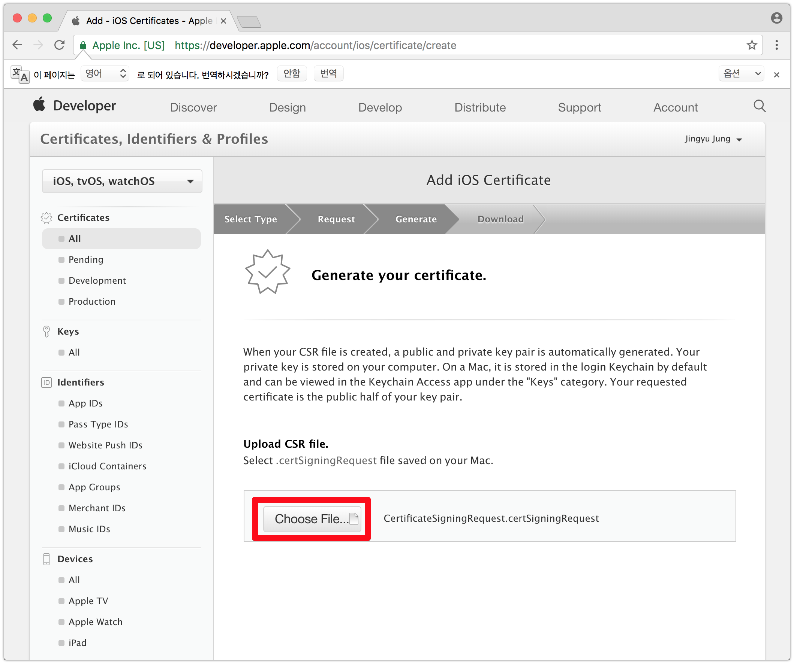
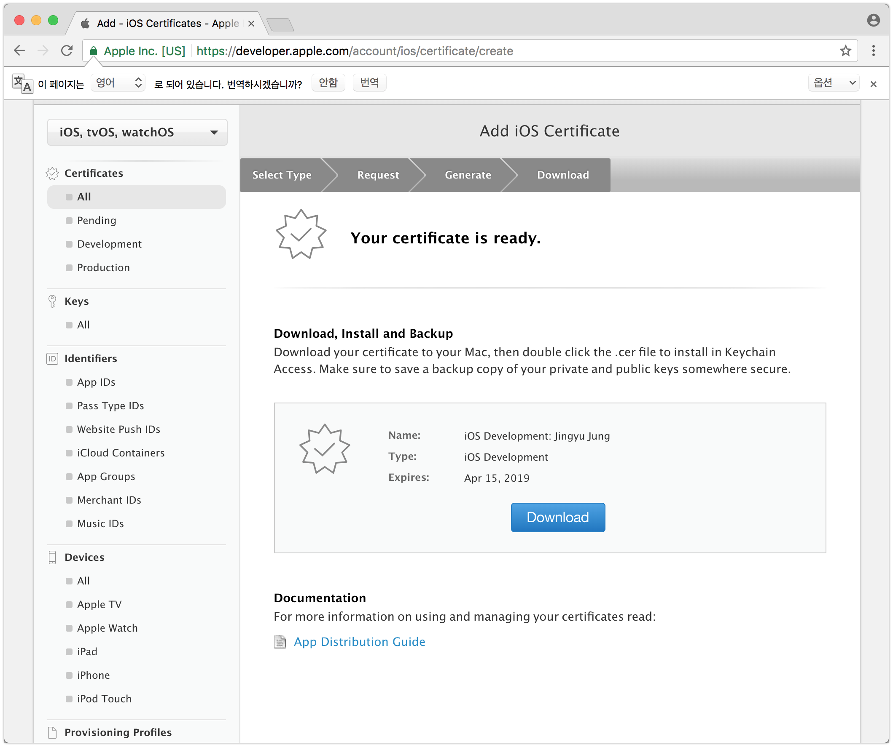

iOS Application 개발 시작하기 - 1 (개발자 등록, 인증서 등록)
-읽음
Apple 개발자 계정
iOS앱을 개발하고 AppStore에 등록, 판매하기 위해서 Apple에 개발자 계정을 등록해야 한다. 애플 개발자 계정은 1년에 약 한화로 10만원 정도 된다. Google에 비하면 정말 비싼가격이지만…! iOS 개발자가 개발자 계정 없이 먹고 살 수 없으니 등록하자!
준비물은 약 10만원 정도가 든 카드와, Apple 계정이다
애플 개발자 사이트 접속
https://developer.apple.com/kr/support/development/
우측 상단의 Account 메뉴를 통해 로그인을 하면 개발자 콘솔로 진입한다.

- 3년전 다른 프로젝트에서 iOS 개발자 등록을 하면서 renew로 뜨는 상태
새로 등록, 또는 재등록. 결국은 결제

2015년 첫 등록시에도 129,000 원이었나요.. 역시 개발자 계정 등록은 회사돈으로 ㅠㅜ
결제를 마치면 감사합니다! 문구와 함께 등록이 끝나고 iOS개발을 위한 첫번째 과정이 끝난다

개발자 인증서 등록
이제 개인 인증서를 앱에 서명을 하기위해 Apple에 등록을 해야한다.
https://developer.apple.com/ 왼쪽 메뉴 Certificates 에서 등록 가능 합니다.
- 직접 인증서를 수동으로 등록하지 않아도, XCode에서 Auto Managing 옵션을 사용할 경우 자동으로 Certificate와 Provisioning profile이 생성되어 등록됩니다. 개인 혼자 앱을 개발하는 경우 AutoManaging을 사용해도 문제가 없으나, 하나의 인증서로 여러명이 개발하는 경우 Auto managing을 사용시 타인이 Revoke 시킬 수 있는 등, AutoManaging보다는 명시적으로 직접 등록하여 사용하는 것이 좋습니다.
Mac 에서 인증서 생성
키체인 접근 프로그램을 실행한다.
메뉴 키체인 접근 -> 인증서 지원 -> 인증 기관에서 인증서 요청...에 진입하여 내용을 작성한다.

요청항목에서는 디스크에 저장됨을 선택해주세요
디스크에 CertificateSigningRequest.certSigningRequest 파일을 저장해둡니다! 잘 보관해주세요
Apple Developer에 인증서 등록
- 애플 개발자 페이지에서 + 버튼을 통해 위 과정에서 만든 인증서를 등록한다
https://developer.apple.com/account/ios/certificate/create
여러가지 옵션을 볼 수 있는데,
- iOS App Development : 개발용 인증서
Apple Push Notification service SSL : 개발용 푸시 테스트 인증서
App Store and Ad Hoc : 앱스토어 or 인하우스 배포용 인증서
- Apple Push Notification service SSL : 앱스토어 or 인하우스 배포용 인증서
크게 Development와 Production 으로 구분된다.
iOS를 개발하기 위해 Development 인증서를 사용하고 개발이 완료되고 AppStore에 등록하기 위해 App Store 인증서를 사용한다고 보면 된다.
지금은 개발을 위한 인증서가 먼저 필요하므로 iOS App Development를 선택한다.
그 다음. Continue, Continue 를 눌러 다음단계로 진행한다.

Choose File.. 을 눌러 위 과정에서 만든 CertificateSigningRequest.certSigningRequest을 선택한다.
그러면 다음페이지에서 cer 파일을 되돌려 받게 된다. 이걸 다운로드 받아서 실행! 키체인에 등록한다.

여기까지가 iOS 앱 개발 시작을 위한 사전 준비과정이 끝났다!
- 디바이스에서 앱 실행을 위한 프로비저닝 생성은 다음시간에 포스팅!